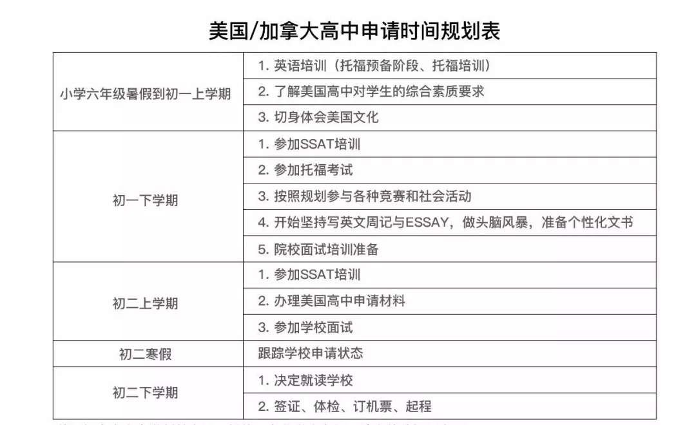
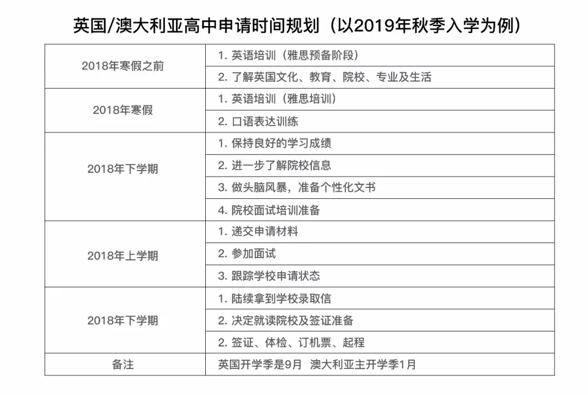
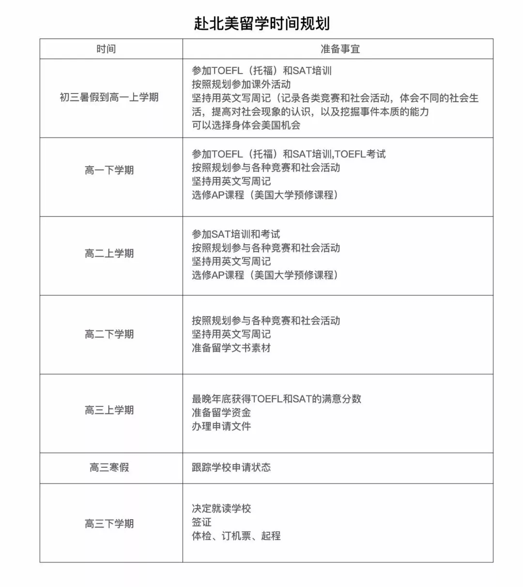
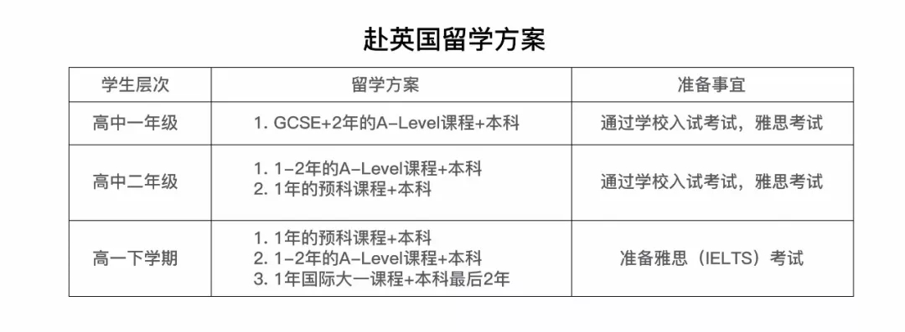
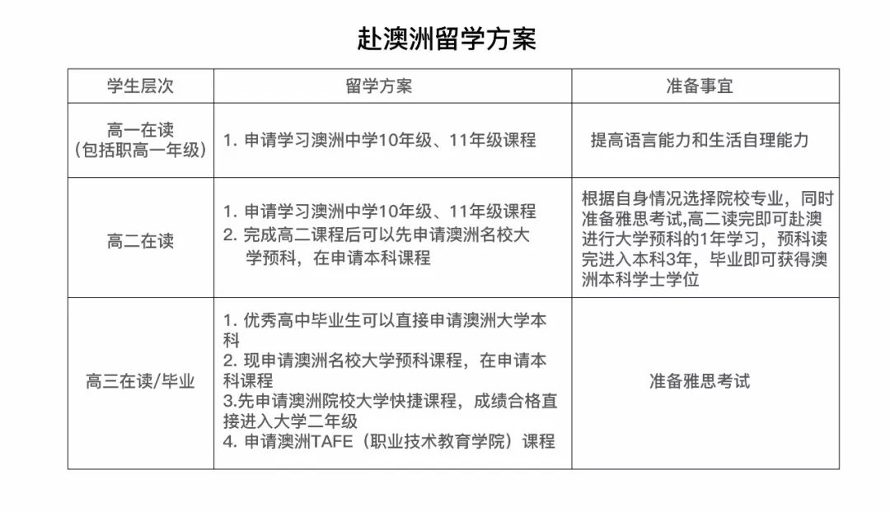

在这个升学、择校的季节里，家长们总是感觉特别迷茫。对于所有要走国际教育路线、想要出国的学生和家长们来说，规划真的很重要，为什么这么说，说两个事儿吧。
她是我曾经采访过的位育中学的孩子，非常优秀，逻辑思维非常清晰，给我的感觉根本不像高二的孩子。当时我们聊到她对未来的打算，这个女孩儿说得有理有据：
“我曾有幸去美国演出，在华盛顿大学的校园宿舍住了一段时间，深深被名校的学术氛围影响，从此坚定一定要去国外上名校的想法。后来去英国交流了三个月，让我确定了那所梦校就是伦敦经济学院。从确定这个目标开始的那一天，我就开始规划自己的留学路。要进这所名校，我需要达到什么条件，要达到这个条件，我需要再高中各个时期做什么事，为了做好这些事我需要提前多久付出努力。”
心里有了这些规划和想法的她，便坚定不移地朝着这个方向努力，无论是各项标化成绩，还是课外活动，一方面为了提升自己的能力，另一方面为了达到名校的录取要求。
再说一个学生，他是今年被世外录取的一个孩子，无独有偶，初二的时候，他在父母的陪同下去美国西部参观几所大学，看到斯坦福大学、加州理工学院等世界顶级名牌大学后，他觉得太令人惊叹了，想着如果自己能在美国的大学读书，那该多好啊。于是初二的他，心里便种下了一个海外名校梦的种子。
“想到要出国留学后，我便和父母开始筹划国际学校的事情，当时主要就是想弄清楚要上哪所国际学校，要学哪类课程，当时经过多方比对和查询，我最终确定了自己的目标：IB类的世外中学，这个学校非常难考，所以为了提升自身竞争力，我在初二的暑假报了强化训练班;寒假开始正式的托福训练;初三下学期开始参加各种标化考试......经过一段痛苦又历练人的时期后，我拿到了世外的录取通知书。”
总是有家长问，我的孩子要不要出国留学，或者，我的孩子要去哪里留学，其实这个问题不是家长应该问的，而是孩子。作为家长，你或许想让孩子走国际教育路线，想让他出国接受更好的教育，但前提一定是孩子想、孩子愿意、孩子主动去争取。作为家长，只能引导，或者带他去国外感受名校的氛围，或者和孩子好好沟通未来的打算，只有孩子愿意了，他内心有坚定的意愿了，那么规划这件事才能齐头并进。
早规划，可能很多家长对这个概念理解起来比较模糊，换一个通俗的说法就是确保充分的准备时间，拿出一份完善的规划，在既定的时间里去完成相应的事情。具体而言就是解决这两个问题：第一，需要做什么?第二，什么时候去做?需要在“时间”和“内容”上进行把握。
时间上
建议想出国读本科的学生，在初三暑假就开始做留学规划;去美国读高中，初中就开始准备;想出国读研的学生，在大一阶段就开始做留学规划，这样时间是比较充裕的。
什么时候参加考试、什么时候拿到成绩、如何向学校展示自己的各类社会实践和综合素质，都是要进行把控的。
内容上
首先需要明确：留学国家、专业、什么时候出国;然后根据这些学校的要求进行准备，如标化成绩、GPA、社会活动情况、申请文书等。
周末、寒暑假做什么?需要拿到什么奖项和证明?如何管理时间?这些都是需要提前做好规划的。
我根据自己的一些经验和探究，给大家列了这些时间规划表，包括申请高中留学时间规划表和高中申请本科时间规划表，留学国家我这里主要从英美澳加这四个主流国家中进行整理和规划。各位同学和家长可以根据自己的实际情况，参照这份规划表，好好想想自己当下、明天、一个月内、半年内需要做什么。
申请海外高中时间规划

高中申请海外本科时间规划

做好了规划，就要早早准备起来了。无论是将来的出国留学，还是现在选择读国际学校，都要根据目标学校的要求，进行语言能力、各类知识的储备和综合素养的准备，提前了解不同学校考察学生时不同的侧重点。